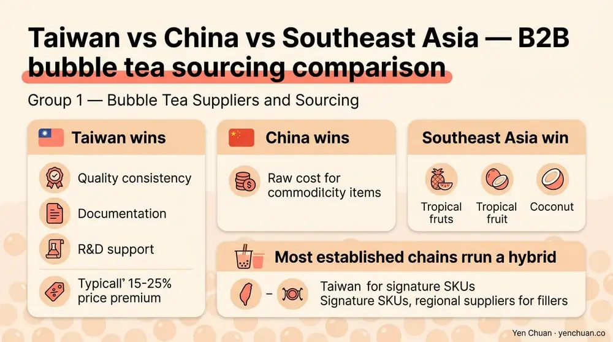
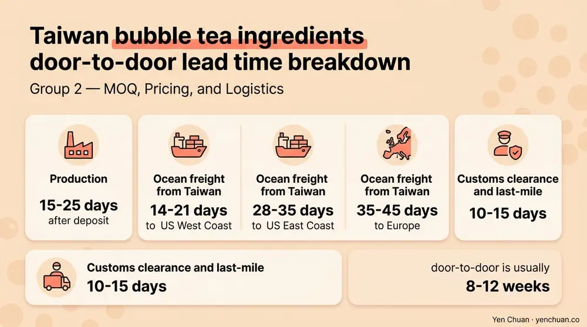

文章 / 經營與採購
Bubble Tea Ingredients FAQ: 30 B2B Buyer Questions
這篇是英文原文，尚未完成繁體中文翻譯。中文選單與相關商品連結不會切回英文介面。

查看英文原文（尚未翻譯）
Sourcing bubble tea ingredients at scale raises the same questions in almost every procurement call — what's a reasonable MOQ, which certifications actually matter, how long will a pallet of tapioca pearls stay fresh on a humid dock in Houston. This hub gathers the 30 questions that B2B buyers ask us most often, with short, practical answers that you can bring straight into a supplier conversation. It's organized into five groups — suppliers, MOQ and logistics, compliance, products, and quality — so you can jump to whatever you're being asked to sign off on this week.
A note on how we built it. These questions come from twenty years of quotes, audits, and customs cases across chains in North America, Southeast Asia, and the Gulf. We've tried to keep every answer concrete — a number, a document name, a regulation — rather than abstract advice. Where a topic deserves a full article, we link out to deeper coverage so you can keep digging.
Group 1 — Bubble Tea Suppliers and Sourcing
Q: What qualifies a company as a legitimate bubble tea ingredients supplier for B2B buyers?
A: A real B2B supplier owns or directly controls production (not a reseller), holds a food-grade facility audit (HACCP, ISO 22000, or FSSC 22000), can issue a Certificate of Analysis on every lot, and supports international shipping documents like phytosanitary certificates and commercial invoices. Ask for the factory address and the auditor's report, not just a brochure.
Q: Where do most bubble tea ingredients actually come from?
A: Taiwan remains the origin for most premium tapioca pearls, tea leaves, and non-dairy creamers used by global chains. China produces high-volume commodity pearls at lower cost. Thailand, Vietnam, and Malaysia supply fruit purees, coconut, and palm-based creamers. For a detailed breakdown, see our Bubble Tea Supply: Taiwan vs China vs Southeast Asia Sourcing Compared guide.
Q: How do I vet a bubble tea supplier before signing a contract?
A: Request the factory audit report, three recent COAs for the specific SKU you plan to buy, a sample shipment under the proposed Incoterms, and references from two existing export clients. A legitimate supplier provides these in under a week. If documents are vague or delayed, treat it as a signal and move on.
Q: What's the difference between a manufacturer, a trading company, and a distributor?
A: A manufacturer produces in their own facility and can modify formulas. A trading company aggregates multiple factories and resells — fine for variety, risky for quality control. A distributor holds inventory in your market for short lead times and small orders. Most mature buyers blend all three depending on SKU velocity.
Q: Is it better to source from Taiwan, China, or Southeast Asia?
A: Taiwan wins on quality consistency, documentation, and R&D support, typically at a 15-25% price premium. China wins on raw cost for commodity items. Southeast Asia wins on specific categories like tropical fruit and coconut. Most established chains run a hybrid: Taiwan for signature SKUs, regional suppliers for fillers.

Q: Can I source all bubble tea ingredients from a single supplier?
A: Technically yes — full-line Taiwan suppliers offer pearls, powders, syrups, toppings, and packaging from one account. Operationally, it reduces paperwork, consolidates shipments, and simplifies audits. The trade-off is concentration risk, so most larger buyers keep a secondary source for their highest-volume SKU.
Group 2 — MOQ, Pricing, and Logistics
Q: What's a typical MOQ for bubble tea wholesale?
A: For Taiwan manufacturers, the usual floor is one 20-foot container (roughly 8-10 tons) for commodity items like tapioca pearls or non-dairy creamer. Specialty powders and syrups often have per-SKU MOQs of 200-500 kg. Smaller buyers typically consolidate with a distributor to meet the container threshold.
Q: How is bubble tea ingredient pricing structured?
A: Quotes usually come as ex-works (EXW) or FOB Taiwan, priced per kilogram or per carton. Typical cost drivers are raw material (50-65%), processing (15-20%), packaging (10-15%), and logistics buffer (5-10%). Volume tiers kick in at one container, three containers, and annual contracts.
Q: What Incoterms do Taiwan suppliers usually offer?
A: FOB Taichung, FOB Kaohsiung, and CIF destination port are the most common. DDP is available for select markets but adds a 5-8% premium. First-time importers should start with CIF — the supplier handles ocean freight — until your broker relationship is solid.
Q: What's the shelf life of common bubble tea ingredients?
A: Dried tapioca pearls last 12-18 months sealed, 6-9 months opened. Non-dairy creamer lasts 18-24 months in moisture-barrier packaging. Powders average 12-18 months. Syrups vary widely — 6 months for fresh fruit syrups to 24 months for sugar-based. Always verify against the COA for the specific lot.
Q: Do bubble tea ingredients need cold-chain shipping?
A: Most don't. Dry powders, dried pearls, and shelf-stable syrups ship ambient in standard 20-foot containers. Cold chain matters for fresh-pack instant pearls (frozen), dairy creamers, and some fruit purees. Ambient shipping is 30-40% cheaper, so specify correctly on the bill of lading.
Q: What are typical lead times for international orders?
A: Production is 15-25 days after deposit. Ocean freight from Taiwan adds 14-21 days to the US West Coast, 28-35 days to the US East Coast, 35-45 days to Europe. Build in 10-15 days of customs clearance and last-mile. Total door-to-door is usually 8-12 weeks.

Group 3 — Compliance, Certifications, and Documentation
Q: What documents do I need to import bubble tea ingredients into the US?
A: At minimum: commercial invoice, packing list, bill of lading, FDA prior notice, and a COA per lot. High-risk categories (dairy, novel ingredients) also require FSVP documentation showing the foreign supplier verification plan. Work with a customs broker experienced in F&B — they'll catch misclassifications early. See our full FDA labeling guide for the US market for retail-facing requirements.
Q: What is a COA and why does every buyer need one?
A: A Certificate of Analysis is a lab-signed document showing a specific production lot's test results — microbial, heavy metals, moisture, purity, and any allergen screens. It's the single document that transfers food-safety liability from supplier to buyer. Never accept a shipment without a matching COA for the lot number on the carton.
Q: Is RSPO certification required for non-dairy creamer?
A: Not legally required in most markets, but increasingly required by large buyers — retail chains, airlines, and corporate cafés often won't purchase uncertified palm products. Expect an 8-15% premium for RSPO Mass Balance and 15-25% for Segregated. Our RSPO vs Non-RSPO Creamer breakdown covers the exact trade-offs.
Q: Are halal and kosher certifications common for Taiwan suppliers?
A: Yes, especially for exporters serving Southeast Asia and North America. Major Taiwan manufacturers typically hold JAKIM or MUI halal certification and OU or Star-K kosher certification. Request the actual certificate and verify it's still active on the certifier's website — annual renewals lapse more often than buyers expect.
Q: How do I comply with FDA labeling for a bubble tea brand?
A: The bottled or canned product needs a Nutrition Facts panel, ingredient list in descending order, allergen disclosures, net weight in US units, and a domestic address. In-shop prepared drinks are governed by different rules (menu labeling for chains with 20+ locations). Start with the FDA's Food Labeling Guide before your first production run.
Q: What allergen disclosures apply to bubble tea ingredients?
A: The nine US major allergens — milk, eggs, fish, shellfish, tree nuts, peanuts, wheat, soy, and sesame — must be declared when present. Common bubble tea triggers: milk powder, soy lecithin in creamers, wheat-based modified starch, sesame in some syrups. Ask suppliers for an allergen statement with every COA, not just the ingredient list.
Group 4 — Products and Formulations
Q: What are tapioca pearls actually made of?
A: Tapioca starch from cassava root, water, and caramel coloring for the black variety. Premium pearls add modified starch for longer chew retention. Budget pearls may use starch blends with sweet potato or maltodextrin — cheaper, but less elastic. Browse our full tapioca pearl catalog to see the range.
Q: What's the difference between instant, dried, and frozen tapioca pearls?
A: Dried pearls need 25-30 minutes of cooking plus syrup resting — best texture, most labor. Instant pearls are pre-cooked and vacuum-packed in syrup, ready in 5 minutes — ideal for high-volume shops. Frozen-dried pearls keep 12+ months frozen and cook in 8-10 minutes — a popular middle ground.
Q: What non-dairy creamer options exist for bubble tea?
A: Coconut-oil-based, palm-oil-based, and plant-blend creamers cover most applications. Palm-based is the category workhorse for price and foam stability. Coconut-based suits vegan and clean-label positioning. See the non-dairy creamer product page for technical specs.
Q: Do suppliers provide milk tea powder or concentrate?
A: Both. All-in-one milk tea powder (tea + creamer + sugar) is the fastest to deploy and dominates high-volume chains. Liquid concentrate gives better flavor control for premium positioning. Brewed-tea-plus-creamer is the most labor-intensive but tastes best. Most chains run a hybrid menu.
Q: Can I customize a product for flavor, sugar level, or packaging?
A: Yes, at Taiwan manufacturer level. Typical customization MOQs: flavor tweaks 500 kg, new SKU development 1-2 tons, private-label packaging 5,000 units per SKU. Development timelines run 4-8 weeks plus regulatory review if you're changing ingredient declarations.
Q: What's the difference between popping boba, jelly, and pudding toppings?
A: Popping boba uses alginate encapsulation to hold a liquid fruit core that bursts on bite. Jellies (konjac, coconut, grass) are gelled solids with chewy texture. Puddings are custard-based, softer, and dairy or egg-containing. Each has different shelf life, shipping, and storage requirements.
Group 5 — Quality, Menu Economics, and Long-Term Partnership
Q: How can I tell if a powder or syrup is high quality before I buy?
A: Three steps. First, read the COA — specifically moisture content, microbial counts, and any residue screens. Second, check ingredient order on the declaration; fillers like maltodextrin near the top mean a diluted product. Third, run a sensory panel with your existing staff against your current benchmark SKU. Our supplier vetting guide walks through the full process.
Q: How many SKUs does a new boba shop typically need?
A: A lean opening menu runs on 15-20 ingredient SKUs: 2-3 tea bases, 1-2 creamers, 3-4 syrups, 2-3 pearl variants, 3-4 toppings, plus packaging. Expanding beyond 30 SKUs introduces significant inventory risk without menu-engineering discipline.
Q: What's a reasonable ingredient cost percentage per cup?
A: Ingredient cost of goods typically runs 18-25% of menu price for mainstream boba drinks, 25-32% for premium or fresh-fruit menus. Cups above 32% COGS struggle on unit economics once labor and rent are added. Audit quarterly — ingredient prices move.
Q: How do vegan or low-sugar reformulations affect sourcing?
A: Vegan reformulation usually means swapping dairy creamer for coconut or oat-based equivalents, which cost 10-20% more and foam differently. Low-sugar work involves alternative sweeteners (stevia, erythritol, allulose) and formula rebalancing to preserve mouthfeel. Both require 4-6 weeks of R&D and fresh allergen statements.
Q: How do I audit a Taiwan supplier remotely?
A: Ask for the most recent third-party audit report (SGS, Bureau Veritas, or SQF), a live video tour of the production line, lot-level COAs for the last six months, and two active customer references. A one-hour video walkthrough catches more than a paper audit. Plan an in-person visit within the first twelve months.
Q: How do I build a long-term relationship with a Taiwan supplier?
A: Commit to an annual volume forecast rather than one-off POs, pay within the agreed terms, share menu-performance feedback, and visit the factory at least once a year. Suppliers reciprocate with earlier access to new R&D, locked pricing during raw-material volatility, and priority production slots.
Authority Citations
- FDA Food Labeling Guide
- FSSC 22000 Food Safety System Certification
- RSPO — Roundtable on Sustainable Palm Oil
- Grand View Research — Bubble Tea Market Report
- USDA Foreign Agricultural Service — Taiwan F&B Exporter Guide
About Yen Chuan
Yen Chuan has been at the heart of Taiwan's bubble tea industry for over 20 years, supplying premium powders, syrups, tapioca pearls, and tea leaves to thousands of boba shops worldwide. With an in-house R&D lab and a commitment to quality ingredients, Yen Chuan is more than a supplier — we're your partner in the boba business.
This FAQ hub is a working document. Our sourcing and R&D teams update it as procurement practices shift — FSVP tightening, new sweetener options, regional certification trends — so procurement teams can point new hires at a single reference page.
Ready to dig into a specific SKU?
Still have a question this hub didn't cover? Get in touch with our team — we'll connect you with the product manager who knows that exact category. For a full catalog of wholesale ingredients, browse the Yen Chuan online store — we ship worldwide from Taiwan.
Frequently Asked Questions
Q: What is the minimum order for Taiwan bubble tea suppliers? A: Typical MOQ is one 20-foot container (8-10 tons) for commodity items, with per-SKU MOQs of 200-500 kg on specialty powders and syrups. Smaller buyers usually consolidate through a distributor.
Q: How long do tapioca pearls last in storage? A: Dried pearls keep 12-18 months sealed and 6-9 months after opening. Frozen-dried variants last 12+ months frozen. Instant pearls in syrup run 6-9 months at ambient. Always verify against the lot COA.
Q: Do I need RSPO certification to sell bubble tea in the US? A: Not legally, but major retail chains and corporate accounts increasingly require it for palm-based creamers. Expect an 8-15% premium for RSPO Mass Balance and 15-25% for Segregated.
Q: What's the shelf life of non-dairy creamer for boba? A: Non-dairy creamer in moisture-barrier packaging lasts 18-24 months sealed. Once opened, use within 60-90 days to maintain foam stability and flavor.
Q: How do I verify a Taiwan bubble tea supplier is real? A: Request the factory address, third-party audit report (SGS, Bureau Veritas, or SQF), recent COAs, and two export references. Run a video walkthrough of the production line before any PO above pilot volume.